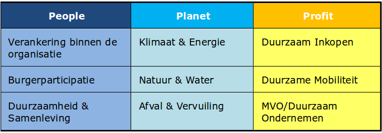

Duurzaamheidsmeter 2013
introductie
De Lokale Duurzaamheidsmeter wordt iedere vier jaar geactualiseerd in het jaar voorafgaand aan de gemeenteraadsverkiezingen. Deze laatste editie is met verenigde krachten ontwikkeld in 2013. De vragenlijsten en resultaten van voorafgaande jaren blijven beschikbaar via de website www.duurzaamheidsmeter.nl.
De Lokale Duurzaamheidsmeter volgt de drie pijlers van duurzaamheid, te weten People, Planet en Profit. De drie vragenlijsten zijn vervolgens onderverdeeld in 3 thema's:

Digitaal invullen
Via deze pagina kunt u de vragenlijsten eenvoudig invullen op een moment dat u daar tijd en ruimte voor heeft. U kunt bovenaan deze pagina een van de vragenlijsten kiezen: people, planet of profit. Vervolgens kiest u de link 'vragenlijst'.
Resultaten
De binnengekomen resultaten worden bekeken op correcte invulling en compleetheid en vervolgens gepubliceerd. Op die manier kunnen gemeenten hun score vergelijken met andere gemeenten. Daarnaast kunnen gemeenten op elk moment hun score actualiseren en raadplegen via de website.
De pagina's gemeenten, provincie, antwoorden en ranglijst worden pas gevuld wanneer gemeenten de lijsten invullen.
Helpdesk
Heeft u vragen bij het invullen van de lijsten? Neem dan contact met ons op. We staan u graag te woord!
Helpdesk Lokale Duurzaamheidsmeter
T 0653523646 (Martha Klein)
E info@duurzaamheidsmeter.nl
Samenwerkingspartners
De volgende organisaties hebben de krachten gebundeld om in 2013 een actualisatie van de Lokale Duurzaamheidsmeter mogelijk te maken en gezamenlijk campagne te voeren:
• VNG International – www.vng-international.nl , www.millenniumgemeente.nl
• FEE-Nederland – www.fee-nederland.nl , www.eco-xxi.nl
• het Klimaatverbond – www.klimaatverbond.nl
• Gemeenten voor Duurzame Ontwikkeling – www.vereniging-gdo.nl
De doorontwikkeling van de Lokale Duurzaamheidsmeter wordt eveneens ondersteund door het programma DuurzaamDoor van AgentschapNL, het gezamenlijk vervolg van de eerdere programma’s Leren voor Duurzame Ontwikkeling (LvDO) en Natuur & Milieu Educatie (NME). Oikos draagt bij aan verankering in gemeenten.
De inhoudelijk ontwikkeling en de helpdesk van de Duurzaamheidsmeter is in handen van FairBusiness (www.fairbusiness.nl).
Duurzaamheidsmeter 2013
ontwikkeld door: Thijs de la Court
inhoud:
FairBusiness
graphic design:
Kuki & Ko
database development & hosting:
Suares & Co
gis map geleverd door
Geodan
Aan deze website kunnen geen rechten worden ontleend.